2019
THE ARCHITECTURE PORTFOLIO GUIDEBOOK
Book design and assembly
Professor Vincent Hui’s guide for architecture students assembling portfolios for professional and academic applications.
CONTEXT
Book published with Routledge
COLLABORATOR
Vincent Hui, author
ROLE
Book and cover design, image creation and assembly, interview transcription and editing
TOOLS
Illustrator, Photoshop, InDesign, Excel, Word
My role included collecting and assembling imagery, tracking permissions from more than 50 sources, creating diagrams, designing the cover and copyediting system, transcribing and editing interviews, and writing the appendices.

Alternative covers
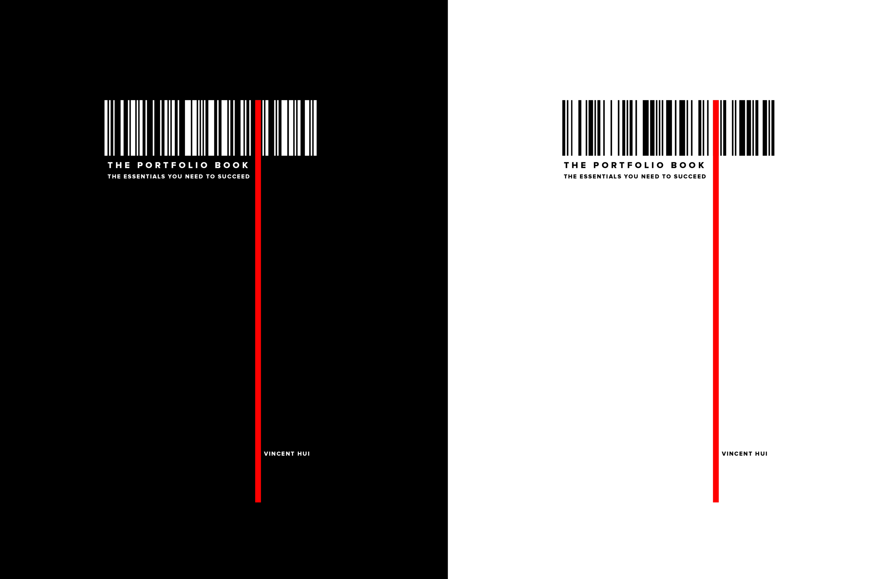
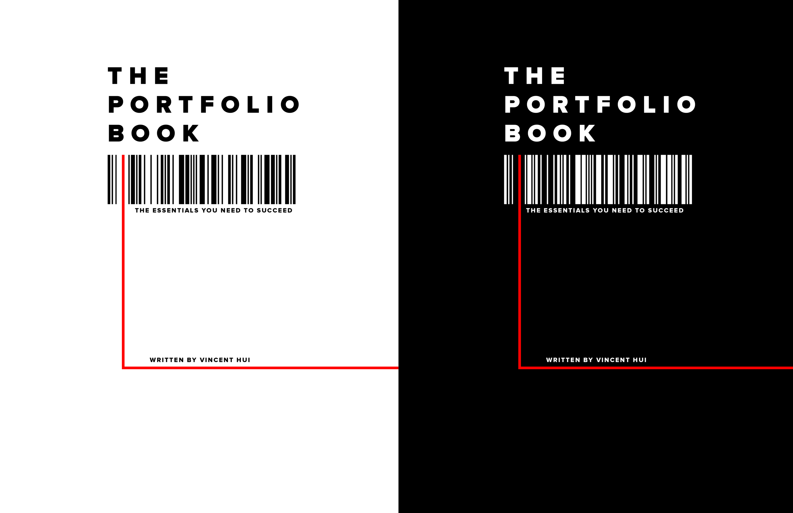
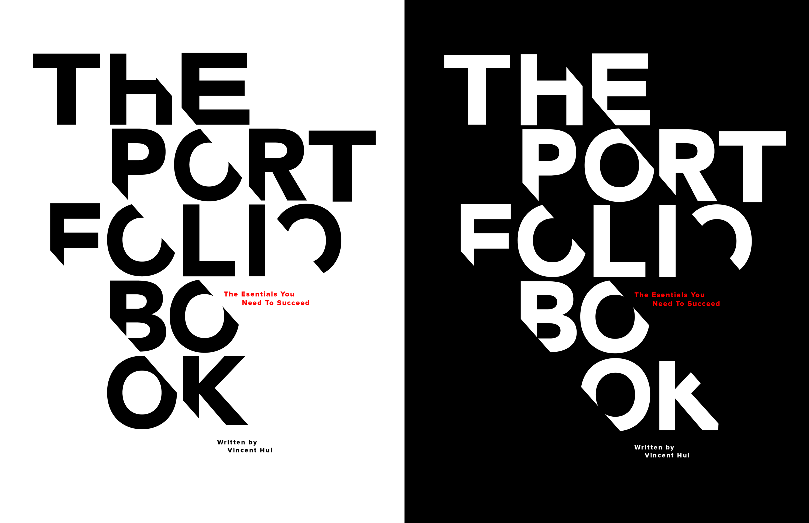
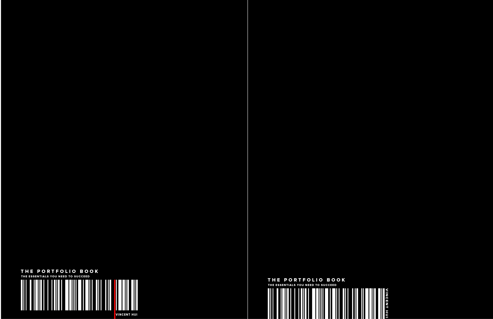
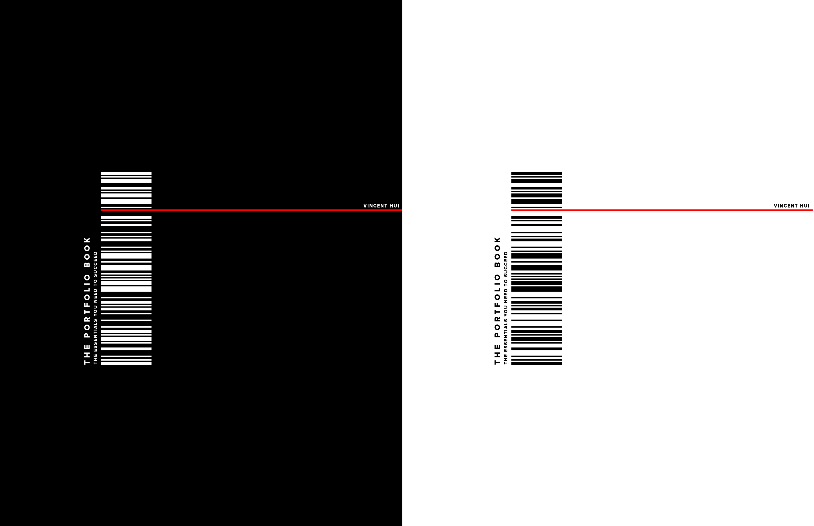
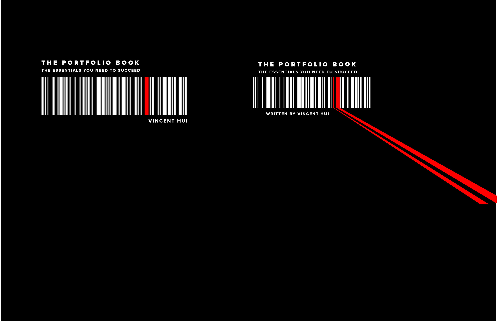
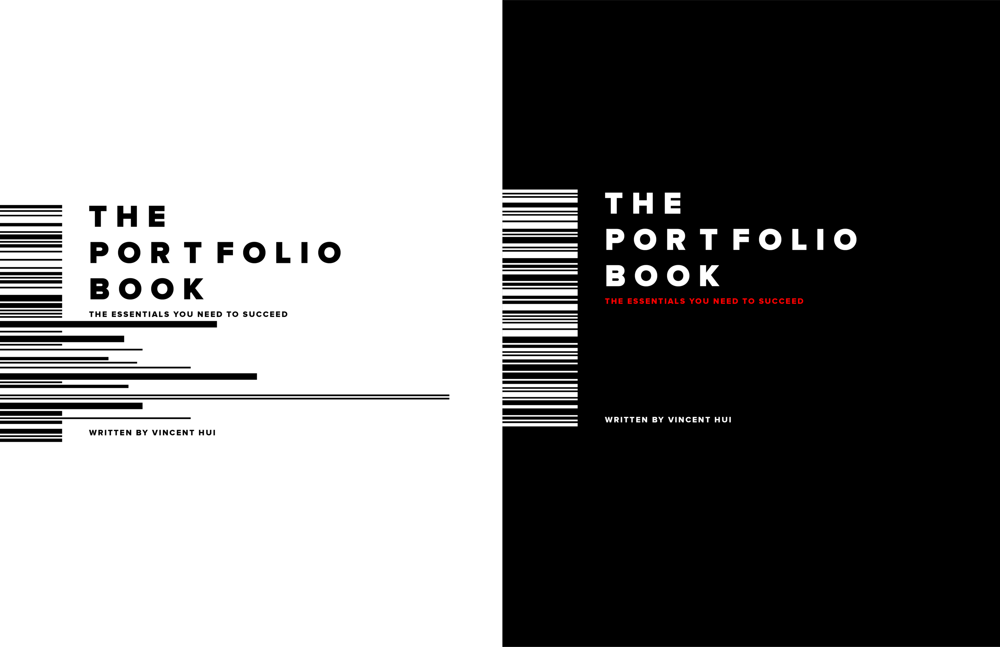
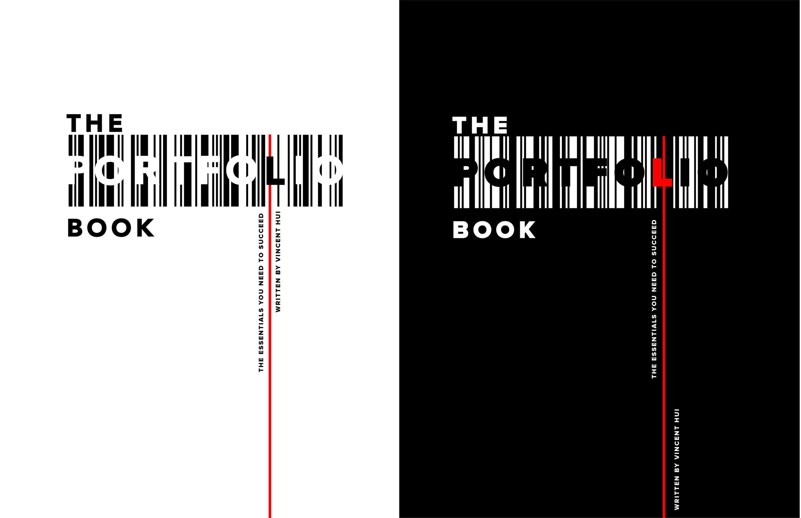
Published book
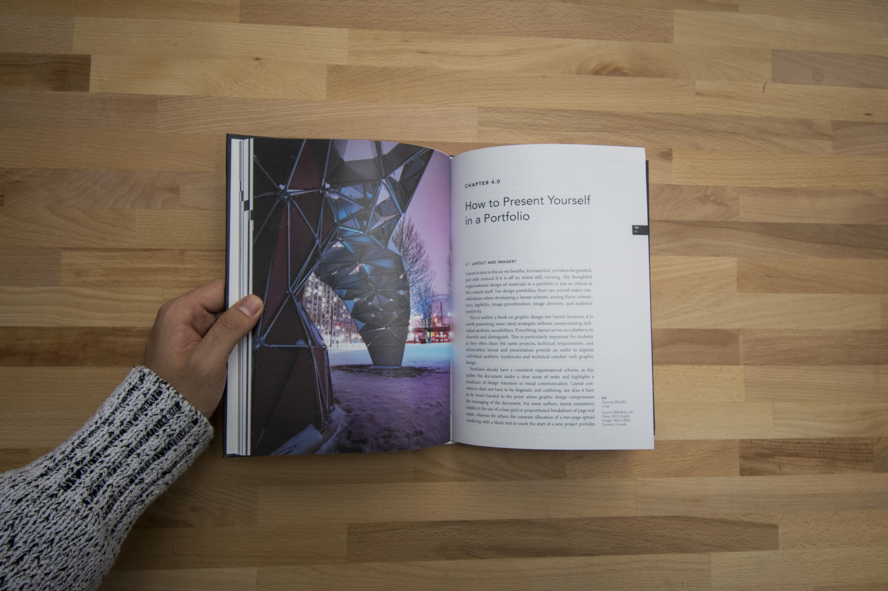
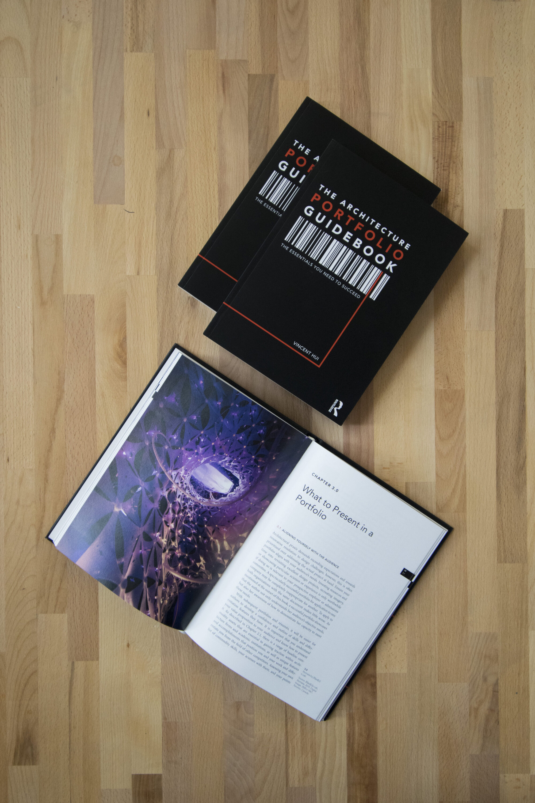
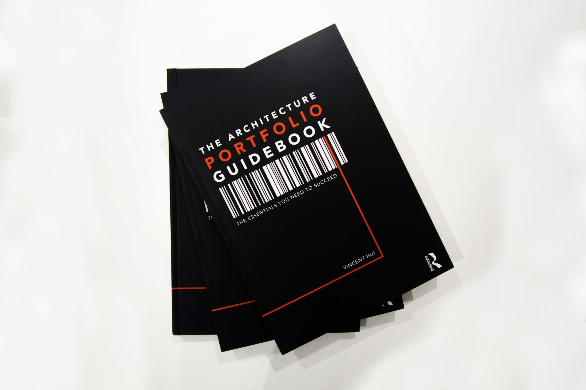
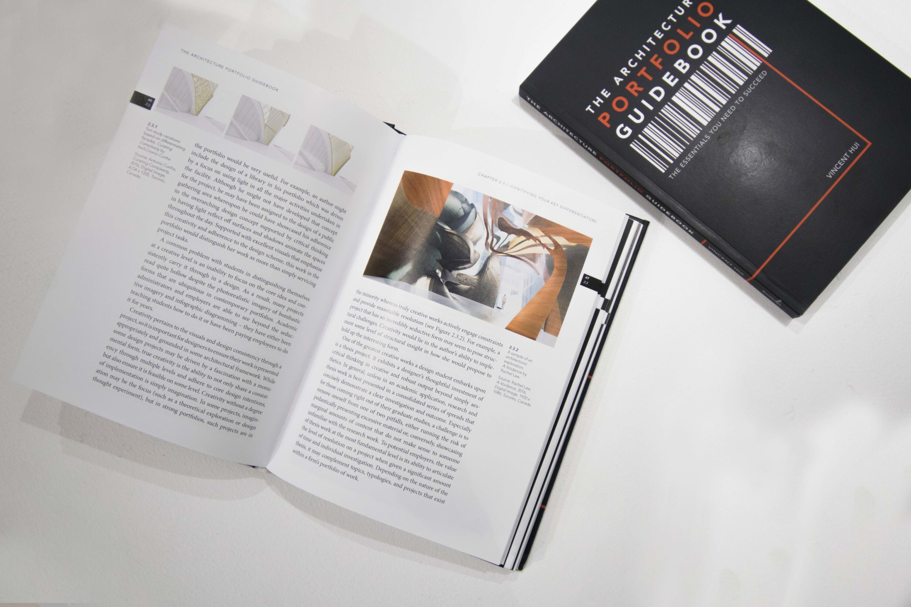